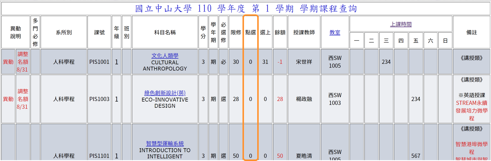
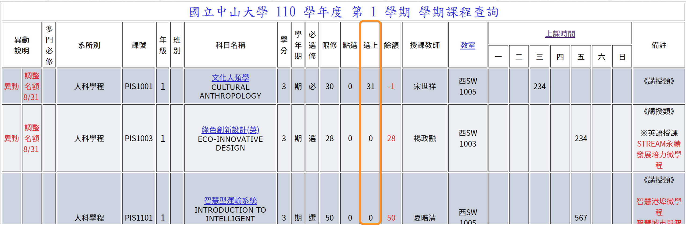

← BACK

本章節會告訴你怎麼在初選一時選課
請先登入選課系統、開啟查詢課程網頁
因為初選一學士班學生只能選修通識課程，所以我們只要注意我們要上哪些通識課就好，其他課都要等到初選二後才能選。
提示：通識課包括
因為這些課是大家的必修課程，通常都會比較搶手，所以通常會優先考慮通識課程，再考慮選修課程。
註：初選二才可選修應用性課程。
例如：前面規劃課表時，我有想要選的跨院跟選修課，但這兩堂課上課時間一樣，此時因為初選一只能選修通識課程，所以先試試看能不能選上該堂跨院，如果選上了就再考慮；如果沒選上，就在初選二時選填選修課。
注意：本階段選課為點數制，每個種類各有100點，可以用來分配到三個志願中。
例如：中文思辨課程總共有100點可以進行分配使用，且單個選課階段可以選填三門課，分別欲選填
其中最想要上林老師的課、且林老師的課最搶手，所以將點數全押在林老師的課，如下圖所示

選課過程中，如果想要修改剛才已經加選的課程、修改點數，都必須先把已經加選的課程退選（移除），之後再重新操作（加選要選修的課），如下圖所示
如果你想要放棄初選一已經選上的課程，一樣可以透過上述步驟來退掉課程。
選課時，我們可以透過查詢當學期課程來了解目前的選課狀況。
點選：我們可以知道目前這個選課階段有多少人選了這堂課。

選上：在前面已結束的選課階段，有多少位同學已經選上了這門課。

餘額：當前選課階段剩下多少位同學可以被選上。

提示：中山選課不必急著選，選課系統會在選課期間過後，依據比序、志願、抽籤等步驟跑出選課結果。你可以在選課階段隨時觀察點選狀況（目前有多少人選了這堂課），依據當前狀況考慮你是否欲更改志願序。
此時你應該會有疑問，為什麼一定要把100點都押在同一堂課上？
提示：因為當你想選的課有許多人也想要選，大家都押100點，只要你一押小於100點的點數，就等於你還沒進入抽籤環節就出局了，也因此浪費了這些點數，所以必須放手一搏、全押在點選人數大於餘額的課上。
接下來，你可以等待結果，並開始著手準備初選二